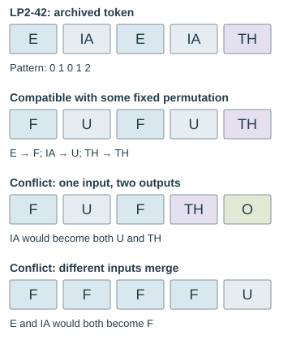

What cipher operations preserve
Compare rearrangements, fixed substitutions, and position-dependent shifts before choosing a measurement.
On this page
An invariant is something an operation leaves unchanged. In cipher analysis, invariants help you check an implementation and avoid tests that cannot distinguish the candidates you are comparing. If every rearrangement of the same runes has the same whole-stream index of coincidence, selecting the rearrangement with the “best IoC” cannot work.
First fix what counts as a symbol
For the examples here, one symbol is one of the 29 runes, represented by its zero-based index. A label such as TH or NG still represents one rune. Keep the same input boundaries throughout a comparison: removing a heading or dropping punctuation is a preprocessing decision, not part of the substitution or rearrangement itself. See rune indices and prime values and transcription layers.
What each operation preserves
| Measurement | Pure transposition | Fixed one-to-one substitution | Position-dependent shifts |
|---|---|---|---|
| Number of symbols | Preserved | Preserved | Preserved |
| Count of each named rune | Preserved | Not generally preserved | Not generally preserved |
| Counts sorted without rune names | Preserved | Preserved | Not guaranteed |
| Whole-stream IoC | Preserved | Preserved | Not guaranteed |
| Sum of fixed rune prime values | Preserved | Not generally preserved | Not generally preserved |
| Which positions contain equal symbols | Not generally preserved | Preserved | Not guaranteed |
“Not guaranteed” does not mean “must change.” A particular input can happen to give the same result. A fixed one-to-one substitution uses the same reversible alphabet mapping at every position; ordinary Atbash and a uniform shift are examples. A repeating Vigenère key can instead apply different shifts to different positions.
A necessary condition can constrain a model without rejecting it. For the specific nonzero-key rule Cᵢ − Cᵢ₋₁ = Kᵢ(Pᵢ − 28) mod 29, a doublet is equivalent to plaintext EA. The EA running-sum explanation proves the condition, checks all finite transitions and shows where it fails if assumptions change. The observed 86 doublets require 86 EA events at the measured within-page transitions; no plaintext distribution is inferred.
A five-rune example
Start with F F U F U, or indices 0 0 1 0 1. It has three F runes and two U runes. Its matching-pair numerator is 3 × 2 + 2 × 1 = 8; dividing by 5 × 4 = 20 gives IoC 2/5.

| Operation | Output indices | IoC | What happened |
|---|---|---|---|
| Reverse the sequence | 1 0 1 0 0 | 2/5 | The same runes occupy different positions. |
| Add 1 to every index | 1 1 2 1 2 | 2/5 | Three F become three U; two U become two TH. |
| Subtract the repeating key [0, 1] | 0 28 1 28 1 | 1/5 | The counts become 1, 2, and 2 across three runes. |
The uniform shift preserves the pattern of repetitions even though it changes the rune names. The first, second, and fourth symbols are still equal. Their prime values are different, however: the original prime sum is 3 × 2 + 2 × 3 = 12, while the uniformly shifted sum is 3 × 3 + 2 × 5 = 19. IoC and a Gematria Primus sum measure different properties.
Why IoC survives alphabet relabeling
The IoC formula uses the counts, not the names attached to them. A reversible substitution merely moves those counts to different alphabet entries. Its numerator and denominator therefore stay the same. A transposition keeps each named count unchanged, so it preserves IoC for an even simpler reason.
This also holds for any statistic calculated only from the multiset of counts, such as empirical symbol entropy. It does not hold for a score that compares named rune frequencies against a particular expected distribution: that score depends on which count belongs to which rune. Nor does it automatically hold for measurements made on selected positions or separate columns, because a rearrangement can move runes across those boundaries.
Reproduce the example
Run this with Python 3. It uses exact fractions and the standard library; no data files, network, or AI calls are needed.
from collections import Counter
from fractions import Fraction
def ioc(symbols):
n = len(symbols)
if n < 2:
return None
counts = Counter(symbols)
return Fraction(sum(v * (v - 1) for v in counts.values()), n * (n - 1))
source = [0, 0, 1, 0, 1]
reversed_order = source[::-1]
uniform_shift = [(c + 1) % 29 for c in source]
key = [0, 1]
varying_shift = [(c - key[i % len(key)]) % 29 for i, c in enumerate(source)]
for name, symbols in [
("original", source),
("reversed", reversed_order),
("uniform", uniform_shift),
("varying", varying_shift),
]:
print(name, symbols, ioc(symbols))
assert Counter(source) == Counter(reversed_order)
assert sorted(Counter(source).values()) == sorted(Counter(uniform_shift).values())
assert ioc(source) == ioc(reversed_order) == ioc(uniform_shift) == Fraction(2, 5)
assert ioc(varying_shift) == Fraction(1, 5)Check a proposed word by its repeated runes
A crib is a proposed piece of plaintext at a specified location. For a fixed one-to-one substitution, a crib must preserve the exact pattern of equal symbols: two ciphertext positions are equal if and only if their proposed plaintext positions are equal. This is stronger than checking word length or the number of distinct runes.
The archived LP2-42 token ᛖᛡᛖᛡᚦ has labels E IA E IA TH. Number distinct symbols in order of first appearance, starting at zero: its pattern is 0 1 0 1 2. Positions 1 and 3 must agree, positions 2 and 4 must agree, and the last symbol must differ from both. The examples below use hypothetical rune labels, not proposed English readings.

Why both directions matter
A fixed function gives the same output every time it sees the same input. That rules out the second candidate in the diagram: the two IA runes cannot become U and TH under one fixed map. Requiring the function to be one-to-one also prevents different inputs from sharing an output. That rules out the third candidate, where E and IA both become F.
Conversely, if the two equality patterns agree, pairing the aligned symbols defines a consistent one-to-one map on the symbols actually used. When both sequences use the same 29-symbol alphabet, this partial map can be completed to an alphabet permutation by pairing the unused inputs and outputs. Thus pattern equality is both necessary and sufficient for some fixed alphabet permutation to fit this one alignment. It does not establish that the permutation fits another word, that the text is meaningful, or that a more restricted cipher such as Atbash fits.
Check multiple cribs together with one shared mapping. Two words may each pass separately yet demand different outputs for the same ciphertext rune. A rejection also applies only to the stated alignment, rune tokenization, and cipher model. A position-dependent key, transposition, or a many-to-one map changes the assumptions. Do not expand TH into two Latin letters before checking a one-rune substitution.
Reproduce the LP2-42 example
Run this from the repository or extracted reference-data ZIP. The source slice uses zero-based Unicode character offsets 229–233 in the archived UTF-8 text, before removing line markers. It is token 2313 in the word-length ledger. This is a check of the archived transcription, not a fresh visual reading of the manuscript.
from pathlib import Path
def pattern(symbols):
seen = {}
return tuple(seen.setdefault(symbol, len(seen)) for symbol in symbols)
def compatible(cipher, plain):
return len(cipher) == len(plain) and pattern(cipher) == pattern(plain)
raw = Path("text/lp2-42.txt").read_bytes().decode("utf-8")
cipher = raw[229:234]
assert cipher == "ᛖᛡᛖᛡᚦ"
assert pattern(cipher) == (0, 1, 0, 1, 2)
assert compatible(cipher, ["F", "U", "F", "U", "TH"])
assert not compatible(cipher, ["F", "U", "F", "TH", "O"])
assert not compatible(cipher, ["F", "F", "F", "F", "U"])
# Individually compatible cribs can conflict when combined.
assert compatible([0], [5]) and compatible([0], [6])
assert not compatible([0, 0], [5, 6])
print("PASS: fixed one-to-one substitution pattern checks")A pass is a compatibility result, not a decryption. For how to state the acceptance rule of a larger search, see candidate readings and acceptance tests. This example does not run a dictionary search or assign a probability to a match.
Choose a test that can change
For a transposition search, length and rune counts are integrity checks. To compare candidate orders, examine something sensitive to order, such as repeated neighboring pairs, the distribution within specified columns, or a fully stated language score. A promising score still needs controls for how many arrangements were tried.
For fixed alphabet substitutions, global IoC cannot select the correct mapping. Rune identities and repeated-word patterns can carry information that this single number discards. For position-dependent ciphers, a change in IoC is possible but is not a proof that a key is correct. The IoC guide explains whole-stream versus column measurements; the reproduction guide explains how to record the search scope.
This matters when counting a search space: enumerating 58 shifts and orders does not give 58 different whole-stream IoC scores. Before running a large search, use a small example to check whether your chosen measurement can respond to the parameter you are changing.
What these checks establish
These are mathematical properties of the operations as defined here, illustrated with an artificial sequence. They are not newly completed experiments on an unsolved page. A proposed transposition that changes the rune counts has done something besides rearranging the fixed input; a proposal that preserves them has passed an integrity check, not proved a solution.
For a manuscript example, compare the Warning’s archived and Atbash-decoded sums: both contain 184 runes, but their prime-value totals differ.
For a concrete boundary audit, see word lengths and corpus comparisons. Counting six decimal labels as length-one tokens reconciles two manuscript summaries without changing any rune.
A finite-difference exclusion on the archived pages
A direct polynomial stream is a narrower proposal than a polynomial key combined with unknown plaintext. For c[i] ≡ P(N+s*i) (mod m), a degree-at-most-d polynomial has (d+1)st differences divisible by m. If those differences have greatest common divisor 1, no integer modulus greater than one can work.
The direct polynomial stream experiment checks degree bounds 1–8 in both index and prime coordinates on all 55 nonempty rune pages in LP2-00–55. All 880 checks have gcd 1. Its worked example, full difference ledger and two independent implementations explain the result. Origins and fixed signed strides are covered algebraically; unknown plaintext, irregular clocks, resets and extra output maps are outside this conclusion.
Repeated positions can eliminate an unknown origin
If a rune always labels a divisor q of N+s*i, then q divides the differences between its numbered positions. The position-divisor experiment finds a gcd-one gap witness on each of the 55 nonempty LP2-00–55 rune streams. That excludes unit strides for every origin. For general stride s, it only forces the witnessed divisor to divide s. A worked diagram and stride-two counterexample show why the distinction matters.
For a guide to the logical strength of these findings, see what has actually been ruled out. It distinguishes exact exclusions from necessary constraints and explains how a counterexample limits a broader claim.
Fixed affine maps of the literal prime alphabet
The full-palette affine experiment covers every integer modulus above 109. A fixed affine rule that bijectively maps all 29 literal prime values back into the same palette acts as identity. Its divisor certificate replaces an arbitrary modulus cutoff; the record includes a worked branch and counterexamples for noninjective maps and partial palettes. This does not apply to affine maps on rune indices modulo 29 or prime-derived running keys.
The page-support variant checks all nonempty LP2-00–55 rune supports. LP2-55 has two additional maps that change F to T or Y and fix its other rune values. This exception illustrates why the full-alphabet result cannot simply be applied to a smaller support. Neither map is a recovered reading.
Manuscript pages discussed
Guides linking here
- Start solving: a practical introduction
- Documenting a reproducible attempt
- Transposition ciphers
- Reproducing rune prime sums
- Statistics and measurements
- Index of coincidence: a reproducible rune baseline
- Rune-frequency entropy: balance without order
- Repeated rune sequences: bigrams and trigrams
- Comparing patterns with chance: null models and selection
- Rune matches at a distance: lag coincidences
- Evaluating candidate readings
- Word lengths and corpus comparisons
- Doublets and the 4–2–1 count pattern